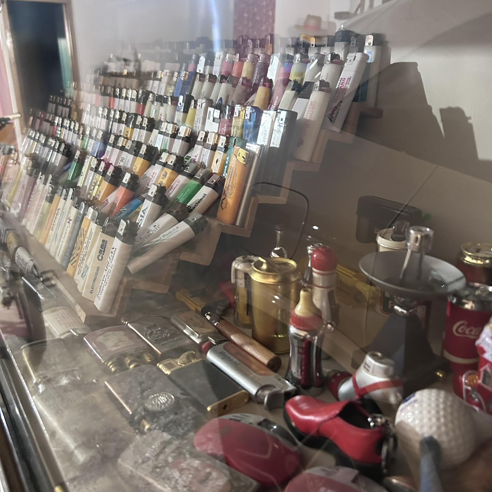

Encendedor de mesa años 50
Una de las piezas más antiguas de la colección y una de las que José conserva con especial cariño. Su tamaño y su diseño la convierten en una de las protagonistas de cualquier estantería.
Piezas destacadas
Entre más de 25.000 encendedores, hay algunos que ocupan un lugar aparte para José: por su antigüedad, por su rareza o, simplemente, por lo que representan en su memoria. Estas son algunas de ellas.
Una de las piezas más antiguas de la colección y una de las que José conserva con especial cariño. Su tamaño y su diseño la convierten en una de las protagonistas de cualquier estantería.

Una de esas piezas que sorprenden a primera vista: un pequeño extintor de incendios convertido en encendedor. Una muestra del ingenio y el humor que esconden algunas de las piezas más curiosas de la colección.

Una pieza con una imagen icónica que viaja directamente a otra época y a otro lugar del mundo. Para José, un buen ejemplo de cómo un objeto tan pequeño puede contener tanta historia.

Dos piezas con una de las formas más insólitas de toda la colección. Son, sin duda, de las que más sonrisas arrancan a quien las descubre por primera vez.

Encendedores asociados a marcas que ya forman parte de la memoria colectiva. Para José, conservar estas piezas es también una manera de conservar un trozo de la historia reciente.

Una lata de sardinas, un zapato, una pelota de golf… Algunas de las piezas más divertidas de la colección son aquellas que se disfrazan de objetos del día a día.
Explora la galería fotográfica completa y descubre muchas más piezas de la colección.
Ir a la galería